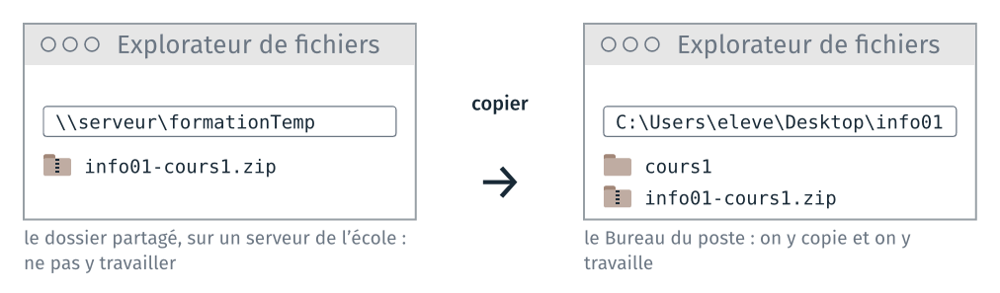
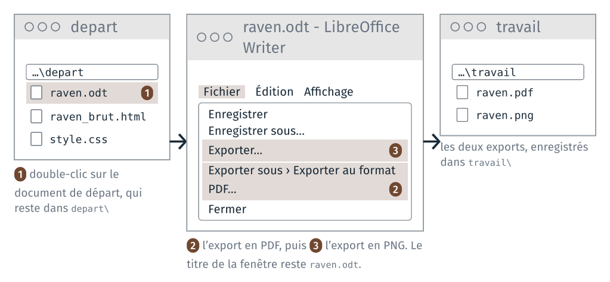
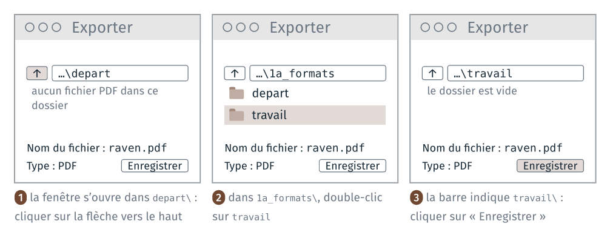

TD 1a — Fichiers, formats et extensions#
Note
Les fichiers des TD de la séance sont dans l’archive info01-cours1_v2.zip.
Version 2 du cours 1 : proposition de travail pour 2027-2028. Ce guide reprend celui du TD 1a de 2026 ; le renommage des extensions et l’espace dans un nom de fichier passent au TD 1b, en ligne de commande, et la table ASCII au cours 3.
Le TD commence par copier les fichiers de la séance sur le poste. Il manipule ensuite les fichiers d’un même texte, le poème The Raven d’Edgar Allan Poe (1845), sous plusieurs formes : un document LibreOffice, un fichier texte, deux pages web. On les exporte et on les ouvre avec différents logiciels, pour comparer ce que décide l’extension et ce que contient le fichier. Il dure un quart d’heure.
Tout se fait avec l’explorateur de fichiers, LibreOffice, un navigateur et deux éditeurs de texte, le Bloc-notes et Notepad++. Aucune commande n’est nécessaire.
Le dossier depart\ contient aussi les mêmes fichiers pour un second texte,
Auld Lang Syne de Robert Burns (1788). Qui a fini en avance peut refaire
les étapes avec lui.
Étape |
Objectif |
Ce qu’on fait |
|---|---|---|
1 |
travailler sur le disque du poste, hors du dossier partagé |
copier les fichiers de la séance sur le poste |
2 |
travailler sur des copies, à côté des fichiers livrés |
préparer le dossier du TD |
3 |
produire un même texte dans plusieurs formats |
exporter un même document en trois formats |
4 |
lire l’adresse d’une page ouverte depuis le disque |
ouvrir une page web depuis son disque |
5 |
comparer fichiers texte et fichiers binaires dans un éditeur |
lire les fichiers avec deux éditeurs de texte |
Chaque étape commence par un encadré qui la résume. Ce que chaque étape fait constater est expliqué à la fin du guide, dans « Ce que le TD fait constater » : faire l’étape d’abord, et noter ce qu’on observe, avant de lire l’explication.
Rappels avant de commencer#
La barre d’adresse. En haut de chaque fenêtre de l’explorateur de
fichiers, la barre d’adresse indique le dossier ouvert. Un clic dans la
barre affiche son chemin complet, comme C:\Users\eleve\Desktop\info01.
La flèche vers le haut, à sa gauche, ouvre le dossier parent, celui qui
contient le dossier ouvert.
Ouvrir un fichier avec un autre logiciel. Un double-clic ouvre un fichier avec le logiciel que Windows associe à son extension. Pour en choisir un autre : clic droit sur le fichier, « Ouvrir avec », puis le logiciel. S’il n’est pas dans la liste, « Choisir une autre application ».
La fenêtre d’enregistrement. Enregistrer ou exporter ouvre une fenêtre qui demande un dossier et un nom de fichier. Le dossier est celui de sa barre d’adresse : la lire avant de cliquer sur « Enregistrer ». Elle s’ouvre dans un dossier choisi par le logiciel, souvent celui du document ouvert.
1 · Copier les fichiers de la séance sur le poste#
À faire : ouvrir le dossier partagé
formationTemp; copier l’archiveinfo01-cours1.zipdans le dossierinfo01du Bureau ; l’extraire dans ce même dossier.À obtenir : le dossier
C:\Users\eleve\Desktop\info01contient l’archive et le dossiercours1.
Deux emplacements#
Avant la séance, l’archive est déposée dans le dossier partagé
formationTemp, sur un serveur de l’école. Il faut la copier sur le poste,
puis la décompresser, avant d’ouvrir le premier fichier.

Ne pas travailler dans le dossier partagé. formationTemp est le même
dossier pour tous les élèves. Un fichier enregistré là est visible par tous,
et il peut être écrasé par un autre élève, ou effacé avant la séance
suivante.
Avant d’ouvrir un fichier, regarder la barre d’adresse de l’explorateur :
elle doit commencer par C:\Users\eleve\Desktop\info01. Si elle commence
par \\, ou par la lettre d’un lecteur réseau (icône propre dans « Ce PC »),
on est dans le dossier partagé.
Copier l’archive dans un dossier du Bureau#
Sur le Bureau, double-cliquer sur le raccourci
formationTemp.Windows demande un nom d’utilisateur et un mot de passe : entrer ses identifiants d’élève [à compléter : les mêmes que pour la session réseau ?].
Le dossier s’ouvre dans l’explorateur de fichiers. Il contient l’archive de la séance,
info01-cours1.zip.La première fois : sur le Bureau, clic droit sur un endroit vide, Nouveau, Dossier, et le nommer
info01.Dans
formationTemp, clic droit surinfo01-cours1.zip, Copier (ouCtrl+C).Ouvrir le dossier
info01du Bureau, clic droit sur un endroit vide, Coller (ouCtrl+V). La copie prend quelques secondes.Fermer la fenêtre de
formationTemp. Tout ce qui suit se fait dansinfo01.
L’explorateur affiche le Bureau sous le nom « Bureau ». Son nom réel,
celui qu’on lit dans un chemin ou dans un terminal, est Desktop.
Vérification : dans formationTemp, la barre d’adresse commence par
\\ ; dans info01, elle indique C:\Users\eleve\Desktop\info01.
Décompresser l’archive#
Un fichier .zip est un seul fichier, qui contient des dossiers et des
fichiers compressés. L’explorateur de Windows l’affiche comme un dossier :
un double-clic l’ouvre, et montre son contenu. Ce n’est pas un dossier :
un fichier ouvert par double-clic depuis l’archive est d’abord extrait dans un dossier temporaire ; ce qu’on y enregistre reste dans ce dossier temporaire, et il est perdu à la fermeture ;
VS Code, JupyterLab et Spyder n’ouvrent pas un dossier qui est dans un
.zip. Dans leur fenêtre « Ouvrir un dossier », l’archive est un fichier, et on ne peut pas entrer dedans.
Il faut donc extraire l’archive, une fois, avant de commencer :
Dans
info01, clic droit surinfo01-cours1.zip, « Extraire tout… ».Une fenêtre demande le dossier de destination. Elle propose
C:\Users\eleve\Desktop\info01\info01-cours1. Effacer la fin,\info01-cours1, pour laisserC:\Users\eleve\Desktop\info01. L’archive contient déjà un dossiercours1; sans cette correction, on obtientinfo01\info01-cours1\cours1, un dossier de trop, et les chemins des diapositives ne correspondent plus.Laisser cochée « Afficher les fichiers extraits une fois l’opération terminée », puis cliquer sur « Extraire ».
Le dossier
cours1s’ouvre. Il contient un dossier par TD, numéroté dans l’ordre de la séance (1a_formats,1b_terminal…), avec dans chacun la feuille du TD en PDF, et un fichierREADME.mdqui liste les TD.
Dans info01, il y a maintenant l’archive info01-cours1.zip, avec une
icône de fermeture éclair, et le dossier cours1, avec une icône de
dossier. Tout le travail se fait dans le dossier cours1. L’archive peut
être supprimée, ou gardée pour refaire un TD depuis ses fichiers de départ.
Pour voir l’extension .zip dans le nom, l’explorateur doit afficher les
extensions (étape 2).
La page « Récupérer les fichiers d’une séance » du site du cours détaille
ces opérations, et ce qu’on fait du dossier info01 à la fin de la séance.
Vérification : cours1 apparaît à côté de l’archive, dans info01.
2 · Préparer le dossier du TD#
À faire : afficher les extensions dans l’explorateur ; ouvrir le dossier
cours1\1a_formats\.À obtenir : l’explorateur montre
depart\ettravail\, et les noms de fichiers se terminent par leur extension (raven.odt, pasraven).
Afficher les extensions#
Windows masque par défaut les extensions des types de fichiers qu’il connaît. Dans l’explorateur : menu Affichage, Afficher, cocher « Extensions de noms de fichiers ». Sous macOS : Finder, Réglages, Avancé, « Afficher tous les suffixes de fichiers ». Le réglage se fait une fois, et sert tout le semestre.
Les deux dossiers du TD#
Ouvrir info01\cours1\1a_formats\. Le dossier contient :
1a_formats\
├── depart\
│ ├── raven.odt le poème, document LibreOffice
│ ├── raven_une_ligne.txt le poème, en texte sur une seule ligne
│ ├── raven_une_ligne.donnees le même fichier, avec une autre extension
│ ├── raven_brut.html le poème, en page web sans mise en forme
│ ├── raven_style.html la même page, avec une feuille de style
│ ├── style.css la feuille de style
│ └── auld_lang_syne… les mêmes fichiers pour le second texte
├── travail\ vide
├── td_1a_formats.pdf la feuille du TD
└── README.md
depart\ contient les fichiers fournis, et ne se modifie pas. travail\
reçoit les copies et ce que le TD fabrique. Si une copie est abîmée, on en
refait une à partir de depart\.
Le chemin complet d’un fichier de départ, et celui d’un fichier exporté, sont :
C:\Users\eleve\Desktop\info01\cours1\1a_formats\depart\raven.odt
C:\Users\eleve\Desktop\info01\cours1\1a_formats\travail\raven.pdf
La suite du guide écrit les chemins à partir de 1a_formats\.
Vérification : la barre d’adresse de l’explorateur se termine par
cours1\1a_formats (ou « Bureau > info01 > cours1 > 1a_formats »), et
depart\ montre raven.odt avec son extension.
3 · Exporter un même document en trois formats#
À faire : ouvrir
depart\raven.odtdans LibreOffice Writer ; l’exporter en PDF, puis en PNG, danstravail\; fermer Writer sans enregistrer ; rouvrir les trois fichiers.À obtenir :
travail\contientraven.pdfetraven.png;depart\raven.odtn’a pas changé.
Le document de départ est depart\raven.odt. Il reste dans depart\, et il
reste ouvert dans Writer pendant toute l’étape. Exporter écrit une copie du
document dans un nouveau fichier, dans un autre format, et garde ouvert le
document de départ. Les deux copies vont dans travail\.

Dossier au début de l’étape :
1a_formats\
├── depart\
│ ├── raven.odt le document de départ
│ └── …
└── travail\ vide
3.1 Ouvrir le document de départ#
Dans l’explorateur, ouvrir
depart\.Double-cliquer sur
raven.odt. LibreOffice Writer s’ouvre et affiche le poème.
Vérification : la barre de titre de Writer indique
raven.odt - LibreOffice Writer.
3.2 Exporter en PDF#
Menu Fichier, Exporter sous, Exporter au format PDF…
Une fenêtre « Options PDF » s’affiche. Garder les réglages, et cliquer sur « Exporter ».
La fenêtre d’enregistrement s’ouvre dans
depart\, le dossier du document. Cliquer sur la flèche vers le haut, à gauche de la barre d’adresse : la fenêtre affiche1a_formats\. Double-cliquer surtravail.Le nom proposé est
raven.pdf. Cliquer sur « Enregistrer ».

Vérification : dans l’explorateur, travail\ contient raven.pdf. La
barre de titre de Writer indique toujours raven.odt : l’export n’a pas
changé le document ouvert.
3.3 Exporter en PNG#
Menu Fichier, Exporter… L’export en image se trouve là : « Enregistrer sous » ne propose pas le format PNG.
Dans la fenêtre d’enregistrement, lire la barre d’adresse. Si elle n’indique pas
travail\, y aller comme à l’étape 3.2.Dans la liste « Type », choisir PNG. Le nom devient
raven.png.Cliquer sur « Enregistrer ». Si une fenêtre d’options s’affiche, la valider par « OK ».
Vérification : travail\ contient raven.pdf et raven.png.
3.4 Fermer Writer sans enregistrer#
Fermer Writer. Si une fenêtre demande d’enregistrer les modifications de
raven.odt, répondre « Ne pas enregistrer ». Le document de départ reste
tel qu’il a été livré.
Dossier à la fin de l’étape :
1a_formats\
├── depart\
│ ├── raven.odt inchangé
│ └── …
└── travail\
├── raven.pdf l'export en PDF
└── raven.png l'export en image
3.5 Comparer les trois fichiers#
Rouvrir les trois fichiers par un double-clic : depart\raven.odt,
travail\raven.pdf, travail\raven.png. Windows ouvre chacun avec le
logiciel associé à son extension : Writer pour le .odt, le lecteur PDF du
poste pour le .pdf, la visionneuse d’images pour le .png. Dans chacun,
essayer de sélectionner une ligne du poème, puis de chercher un mot avec
Ctrl + F.
Ouvert depuis LibreOffice (Fichier, Ouvrir), le .png s’affiche dans Draw,
comme une image posée sur une page.
À noter : pour chacun des trois fichiers, si le texte est encore du texte (il se sélectionne, se cherche, se modifie).
Si ça bloque#
raven.pdfouraven.pngest dansdepart\. La fenêtre d’enregistrement était restée dansdepart\. Dans l’explorateur, clic droit sur le fichier, Couper, puis clic droit danstravail\, Coller.Le format PNG n’apparaît pas. Il n’est proposé que par Fichier, Exporter…
raven.pngne montre que le début du poème. L’export en image ne prend que la première page.Writer a été fermé avant les exports. Le rouvrir par un double-clic sur
depart\raven.odt, et reprendre à l’étape 3.2.
4 · Ouvrir une page web depuis son disque#
À faire : ouvrir
depart\raven_brut.htmlpuisdepart\raven_style.htmldans le navigateur ; modifier une couleur dansstyle.css; lire l’adresse de la page.À obtenir : la page mise en forme change de couleur après
F5.
Deux pages, une feuille de style#
Double-cliquer sur
depart\raven_brut.html. Le navigateur l’ouvre, sans réseau.Double-cliquer sur
depart\raven_style.html: le même texte, mis en forme.Ouvrir les deux fichiers dans le Bloc-notes (clic droit, Ouvrir avec, Bloc-notes) et comparer leur en-tête, entre
<head>et</head>, puis la façon dont le poème est écrit.Ouvrir
depart\style.cssdans le Bloc-notes. Remplacer la valeur d’une lignecolor:parcrimson, ou par un code comme#c0392b, et enregistrer.Revenir au navigateur sur
raven_style.html, et recharger la page avecF5.
style.css est le seul fichier de depart\ que le TD modifie : remettre
sa couleur d’origine à la fin de l’étape.
Vérification : après F5, le texte de raven_style.html a la nouvelle
couleur. raven_brut.html n’a pas changé.
L’adresse de la page#
Lire l’adresse que le navigateur affiche pour raven_style.html. Elle a la
forme :
file:///C:/Users/eleve/Desktop/info01/cours1/1a_formats/depart/raven_style.html
À noter : ce qui ressemble à un chemin de fichier dans cette adresse, et ce qui en diffère. Noter aussi ce qui distingue les deux fichiers HTML dans le Bloc-notes.
Si ça bloque#
Le fichier
.htmls’ouvre dans un éditeur de texte. Clic droit sur le fichier, « Ouvrir avec », puis le navigateur (Firefox, Edge, Chrome).Rien ne change après
F5. Vérifier questyle.cssest enregistré : dans le Bloc-notes,Ctrl+S. Vérifier aussi que la page rechargée estraven_style.html, la seule des deux qui appellestyle.css.Le Bloc-notes n’est pas proposé dans « Ouvrir avec ». Choisir « Choisir une autre application », puis Bloc-notes.
5 · Lire les fichiers avec deux éditeurs de texte#
À faire : ouvrir quatre fichiers de
depart\dans le Bloc-notes, puis dans Notepad++.À obtenir : les quatre fichiers ouverts dans chaque éditeur, puis fermés sans enregistrer.
Ouvrir chacun des quatre fichiers suivants dans le Bloc-notes (clic droit, Ouvrir avec, Bloc-notes), puis dans Notepad++ (clic droit, Ouvrir avec, Notepad++, ou par le menu Fichier de Notepad++) :
depart\raven_une_ligne.txtdepart\style.cssdepart\raven_brut.htmldepart\raven.odt
Attention : ne rien enregistrer, et fermer sans sauver. Un .odt
réenregistré par un éditeur de texte est détruit.
À noter : pour chaque fichier et chaque éditeur, si le contenu est lisible, et ce que Notepad++ ajoute à l’affichage.
Si ça bloque#
Une fenêtre demande d’enregistrer à la fermeture. Répondre « Ne pas enregistrer », pour chacun des quatre fichiers.
Notepad++ n’est pas dans « Ouvrir avec ». Lancer Notepad++ depuis le menu Démarrer, puis ouvrir les fichiers par son menu Fichier, Ouvrir. S’il n’est pas installé sur le poste, faire l’étape avec le seul Bloc-notes, et prévenir l’enseignant.
Un
.odta été enregistré par un éditeur de texte. Il ne s’ouvre plus dans Writer. Le recopier depuis l’archiveinfo01-cours1.zip, qui garde les fichiers de départ.
Ce que le TD fait constater#
Cette section se lit après avoir fait les étapes.
Étape 3 : trois formats d’un même document#
Fichier |
Le texte est-il encore du texte ? |
|---|---|
|
oui, et il reste modifiable dans LibreOffice |
|
oui : il se sélectionne et se cherche, mais la mise en page est figée |
|
non : ce sont des pixels, et seule la première page est exportée |
Un PDF décrit la page : les caractères y sont rangés avec leur position. Une image PNG ou JPEG photographie la page : elle ne garde que l’apparence, et le texte n’y est plus que des points de couleur.
Étape 4 : une page web, son style, son adresse#
raven_brut.html et raven_style.html contiennent le même poème. Dans
raven_brut.html, il tient dans un seul paragraphe, <p>, et le navigateur
l’affiche en un bloc : les sauts de ligne du fichier ne sont pas rendus, la
structure d’une page HTML se déclare par des balises. raven_style.html
écrit un paragraphe par vers, et son en-tête contient une ligne de plus,
<link rel="stylesheet" href="style.css">, qui appelle la feuille de style.
style.css décrit la présentation : couleurs, polices, largeur. Modifier style.css change l’apparence de la page sans
toucher au texte. Le contenu est dans un fichier, la présentation dans un
autre, et l’un change sans l’autre. CSS accepte les couleurs par leur nom
(crimson) comme par leur code hexadécimal (#c0392b), deux chiffres par
composante, rouge, vert, bleu.
Une adresse web, ou URL, est un chemin de fichier précédé de la machine où aller le chercher :
Partie |
Dans |
|---|---|
le protocole, la façon convenue de demander le fichier |
|
la machine |
|
le chemin sur cette machine |
|
le fichier |
|
L’adresse d’une page ouverte depuis le disque a la même forme, avec le
protocole file. Entre file:// et le chemin, la place de la machine est
vide, puisque c’est la vôtre ; la troisième barre est le début du chemin,
/C:/. Le navigateur écrit tous les chemins avec des /, même sous Windows.
Étape 5 : ce qu’un éditeur de texte affiche#
Fichier |
Dans le Bloc-notes |
Dans Notepad++ |
|---|---|---|
|
le poème, lisible en entier |
le même, sans couleur |
|
des règles, lisibles |
sélecteurs et propriétés en couleur |
|
le texte et ses balises |
les balises en couleur, repliables |
|
|
les mêmes, et des |
Un éditeur de texte affiche un caractère par octet, selon la table
d’encodage, et n’interprète rien d’autre : ni image, ni mise en forme. Ce qui
n’a pas de caractère correspondant apparaît en carré ou en signe étrange ;
Notepad++ marque NUL les octets de valeur 00.
Les couleurs de Notepad++ ne viennent pas du fichier : l’éditeur les ajoute
d’après l’extension, qu’il associe à un langage. Renommer style.css en
style.txt les fait disparaître. L’éditeur de code du cours 2 fait la
même chose pour Python.
raven_brut.html est du texte, raven.odt n’en est pas, et leur nom ne le
disait pas : seule l’ouverture dans un éditeur de texte le montre. Les deux
caractères PK du début sont la signature d’une archive ZIP, dont un .odt
est une forme. Le cours 3 y revient avec la table ASCII.